感謝您對「自由軟體鑄造場」的支持與愛護，十多年來「自由軟體鑄造場」受中央研究院支持，並在資訊科學研究所以及資訊科技創新研究中心執行，現已完成階段性的任務。 本網站預計持續維運至 2021年底，網站內容基本上不會再更動。
也紀念我們永遠的朋友 李士傑先生（Shih-Chieh Ilya Li）。
也紀念我們永遠的朋友 李士傑先生（Shih-Chieh Ilya Li）。
什麼是資源表列?
Crawlzilla Featured
Rating
0
Written by
Max
Official website
Platform
- Linux
License
- Apache License 2.0（Apache 2.0）
Votes
0
Rate this listing
0 vote
Crawlzilla 是由台灣高速網路與計算中心開發的搜尋引擎, 主要功能為讓使用者輕鬆建立自訂的搜尋引擎, 不用依靠商業公司所提供的搜尋引擎. 適用於自訂範圍搜尋以及公司或是團體內部使用.
Crawlzill 特色整理如下:
Crawlzilla 是由台灣高速網路與計算中心開發的搜尋引擎, 主要功能為讓使用者輕鬆建立自訂的搜尋引擎, 不用依靠商業公司所提供的搜尋引擎. 適用於自訂範圍搜尋以及公司或是團體內部使用.
Crawlzill 特色整理如下:
其他支援的 Linux 作業系統可以參考
https://code.google.com/p/crawlzilla/wiki/Support_Distribution
請開啟 GNOME 終端機 ( 可以在應用程式內尋找)
切換為 root 管理者
要以文字介面 下載可以使用 wget 指令
或是於下載頁面直接下載
https://sourceforge.net/projects/crawlzilla/files/testing/Crawlzilla-1.1/
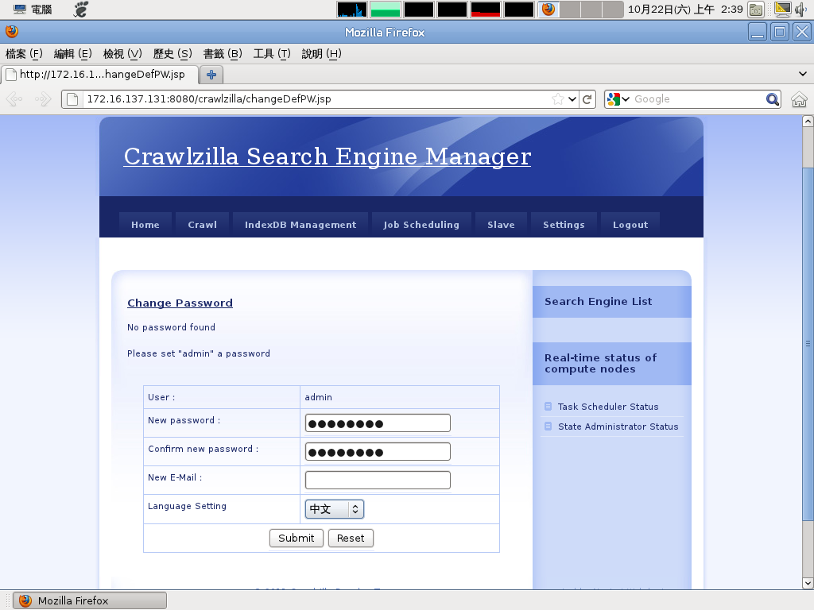
請輸入 索引庫名稱
請輸入 網址 ( 例如 https://linux.vbird.org )
請指定 深度(可以向下到 6 層)
請點選 Submit 送出
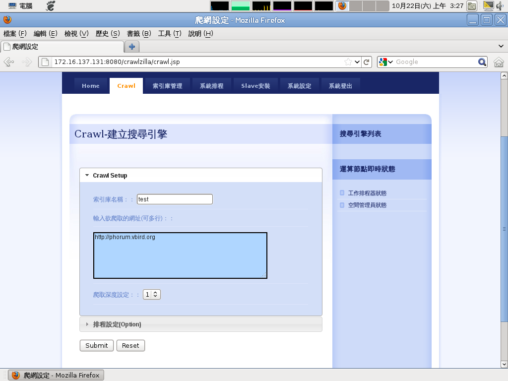
如果該網站資料常常會變動, 可以設定定時排程
請輸入 排程日期
請輸入 時間
請輸入 頻率
最後點選 Submit 送出
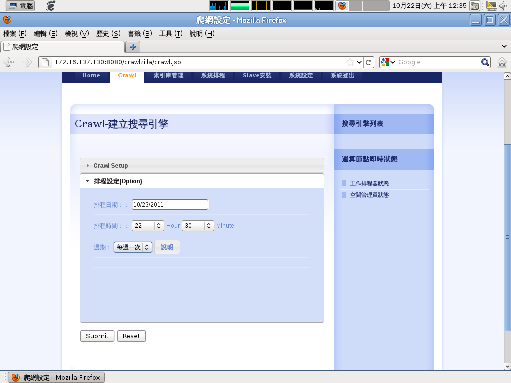
資料擷取的狀態
可以點選 "索引庫管理" 標籤
觀察爬取狀態
要知道目前的工作狀況
可以點選索引庫管理 右邊的 "工作排程器狀態"
畫面如下
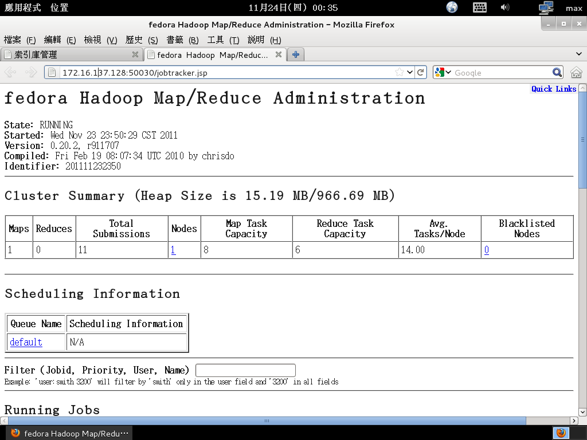
如果要知道目前的檔案及空間狀況
可以點選索引庫管理 右邊的 "空間管理員狀態"
畫面如下
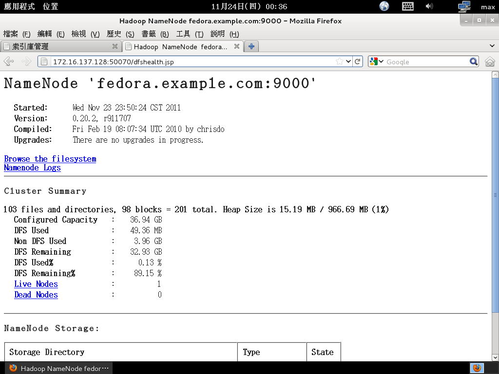
如果要觀察是否有系統排程 或是新增排程
可以點選 "系統排程" 標籤
如果日後要建立叢集系統
可以點選 "Slave 安裝" 標籤
上面有相關安裝程式

資料爬取完畢之後
可以在索引庫管理內找到資料
上面會顯示爬取的時間以及深度
可以點選索引庫名稱來研究相關資料
例如 相關連結的位置以及深度
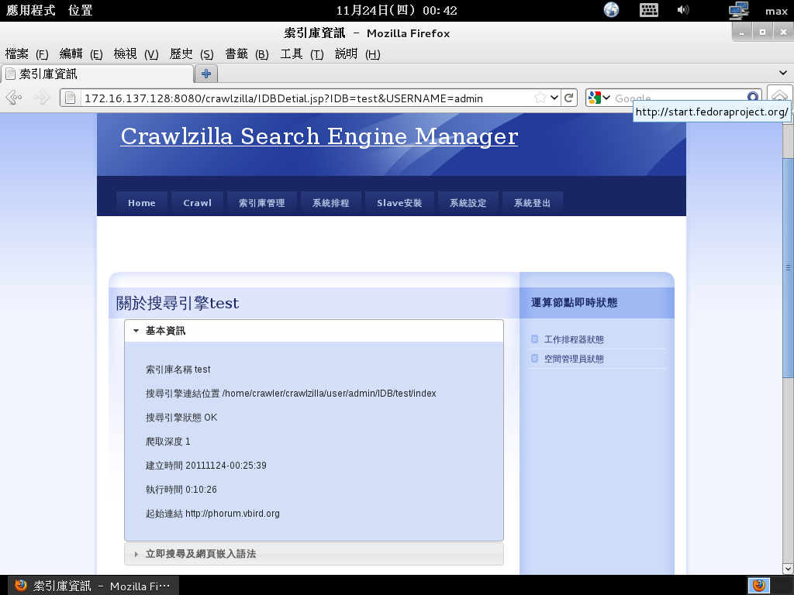
也可以將自訂的搜尋引擎嵌入網頁頁面
或是立即搜尋
針對被索引的資料庫
Crawlzilla 會整理文件的檔案數量
有提到的網址(這個也可以視為網站與其他資源的關係)
會整理文件的型態 ( 純文字/PDF/HTML …)
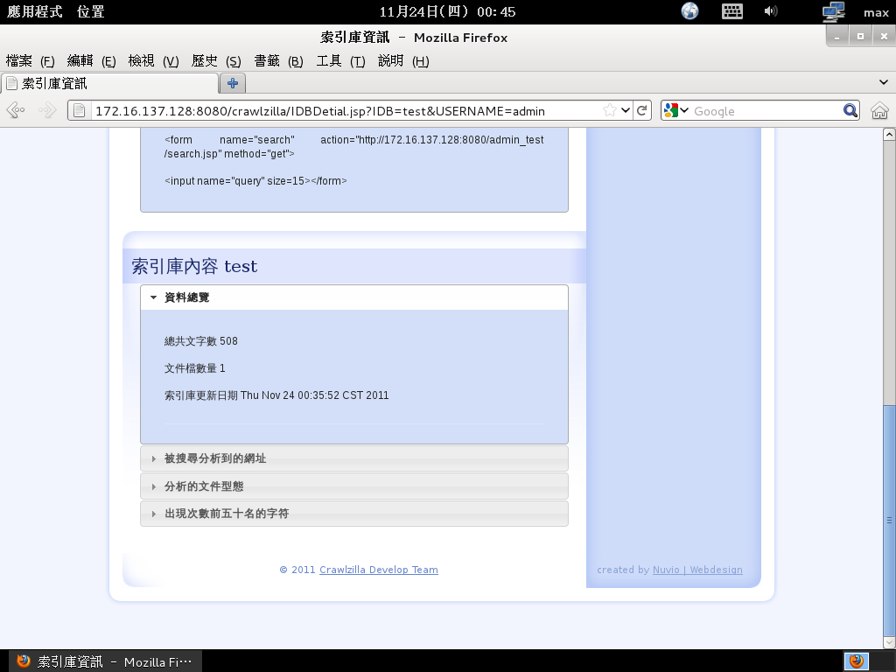
點選 右邊的索引庫名稱可以進入搜尋引擎
輸入關鍵字即可搜尋
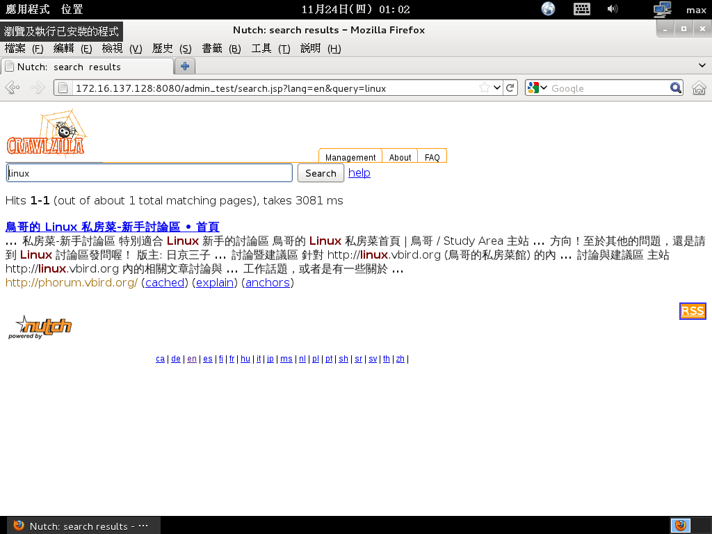
Crawlzill 特色整理如下:
- Crawlzilla 的組成為 Hadoop + Nutch + Tomcat , 但是使用者要建立自己的搜尋引擎, 只要彈指之間就可以輕鬆建立.
- 使用 apache license 2.0 授權, 可以自由下載原始碼來修改.
- 支援 中文分詞能力, 以及分析網頁上的檔案. , 並有開發適合使用者 UI 讓使用者可以輕鬆的上手.
- 具有單機與多台叢集工作能力.
- 目前支援中,英文兩種語系.
Crawlzilla 是由台灣高速網路與計算中心開發的搜尋引擎, 主要功能為讓使用者輕鬆建立自訂的搜尋引擎, 不用依靠商業公司所提供的搜尋引擎. 適用於自訂範圍搜尋以及公司或是團體內部使用.
Crawlzill 特色整理如下:
- Crawlzilla 的組成為 Hadoop + Nutch + Tomcat , 但是使用者要建立自己的搜尋引擎, 只要彈指之間就可以輕鬆建立.
- 使用 apache license 2.0 授權, 可以自由下載原始碼來修改.
- 支援 中文分詞能力, 以及分析網頁上的檔案. , 並有開發適合使用者 UI 讓使用者可以輕鬆的上手.
- 具有單機與多台叢集工作能力.
- 目前支援中,英文兩種語系.
安裝環境介紹
OS: fedora 16其他支援的 Linux 作業系統可以參考
https://code.google.com/p/crawlzilla/wiki/Support_Distribution
Step 1:取得安裝檔案
這邊以 Crawlzilla1.1.111014為例請開啟 GNOME 終端機 ( 可以在應用程式內尋找)
切換為 root 管理者
$su - 請輸入 密碼切換完成shell 提示符號會從 $ 變成 #
要以文字介面 下載可以使用 wget 指令
# yum install wget Dependencies Resolved ============================================================================================================================================ Package Arch Version Repository Size ============================================================================================================================================ Installing: wget i686 1.12-4.fc16 fedora 478 k Transaction Summary ============================================================================================================================================ Install 1 Package Total download size: 478 k Installed size: 478 k Is this ok [y/N]: y (請輸入 y同意安裝)可以於終端機輸入
#wget https://sourceforge.net/projects/crawlzilla/files/testing/Crawlzilla-1.1/Crawlzilla-1.1.111117.tar.gz
或是於下載頁面直接下載
https://sourceforge.net/projects/crawlzilla/files/testing/Crawlzilla-1.1/
Step 2:解壓縮並執行安裝程式
#tar zxvf Crawlzilla-版本.tar.gz
#./Craqlzilla_Install/install
System does not has Crawlzilla.
Identify is root
Your system information is:
Fedora , 16
Try to automatically install: sun-java6-jdk sun-java6-jre sun-java6-fonts expect
Fedora will install some packages sun-java6-jdk sun-java6-jre sun-java6-fonts expect
Loaded plugins: langpacks, presto, refresh-packagekit
Setting up Install Process
Package dialog-1.1-14.20110707.fc16.i686 already installed and latest version
Package wget-1.12-4.fc16.i686 already installed and latest version
Resolving Dependencies
--> Running transaction check
---> Package expect.i686 0:5.45-3.fc16 will be installed
--> Finished Dependency Resolution
Dependencies Resolved
============================================================================================================================================
Package Arch Version Repository Size
============================================================================================================================================
Installing:
expect i686 5.45-3.fc16 fedora 252 k
Transaction Summary
============================================================================================================================================
Install 1 Package
Total download size: 252 k
Installed size: 252 k
Downloading Packages:
expect-5.45-3.fc16.i686.rpm | 252 kB 00:01
Running Transaction Check
Running Transaction Test
Transaction Test Succeeded
Running Transaction
Installing : expect-5.45-3.fc16.i686 1/1
Installed:
expect.i686 0:5.45-3.fc16
Complete!
--2011-11-16 10:26:04-- https://sourceforge.net/projects/crawlzilla/files/other/jdk-6u21-linux-i586-rpm.bin/download
正在查找主機 sourceforge.net... 216.34.181.60
要安裝 'java-1_6_0-sun-devel'，您必須接受下述授權條款:
Operating System Distributor License for Java version 1.1
SUN MICROSYSTEMS, INC. ("SUN") IS WILLING TO LICENSE THE JAVA PLATFORMSTANDARD EDITION DEVELOPER KIT ("JDK" - THE "SOFTWARE") TO YOU ONLYUPON THE CONDITION THAT YOU ACCEPT ALL OF THE TERMS CONTAINED IN THISLICENSE AGREEMENT (THE "AGREEMENT"). PLEASE READ THE AGREEMENTCAREFULLY. BY INSTALLING, USING, OR DISTRIBUTING THIS SOFTWARE, YOUACCEPT ALL OF THE TERMS OF THE AGREEMENT.
1) DEFINITIONS. "Software" means the code identified above in binaryform, any other machine readable materials including, but notlimited to, libraries, source files, header files, and data files),any updates or error corrections provided by Sun, and any usermanuals, programming guides and other documentation provided to youby Sun under this Agreement, and any subsequent versions that Sunmakes available to you hereunder. "Operating System" means anyversion of the Linux or OpenSolaris operating systems that managesthe hardware resources of a general purpose desktop or servercomputer and shares these resources with various software programsthat run on top of it. "Programs" means Java technology applets andapplications intended to run on the Java Platform Standard Edition(Java SE platform) platform on Java-enabled general purpose desktopcomputers and servers.
2) License Grant. Subject to the terms and conditions of thisAgreement, as well as the restrictions a (請恕省略, 按q 離開閱讀)
您同意接受以上的授權條款嗎？ [是/否] (否):
y (請輸入 y 同意)
您同意接受以上的授權條款嗎？ [是/否] (否): y
(請輸入 y 同意)
System has Sun Java 1.6 above version.
System has ssh.
System has ssh Server (sshd).
System has dialog.
Welcome to use Crawlzilla, this install program will create a new accunt and to assist you to setup the password of crawler.
Set password for crawler：
password:
******** (系統會新增一個使用者crawlzilla 用於搜尋引擎. 請輸入密碼)
keyin the password again：
password:
******** (請再次輸入密碼確認)
Please enter your email
email:
******** (請輸入e-mail)
Master網路IP位址為： 172.16.137.128
Master的MAC為： 00:0C:29:A6:F3:6F
請確認上述的安裝資訊：y=正確 n=不正確 o=跳出
y ( 請確認主機 IP 以及網卡資訊, 如果都正確請輸入 y )
接下來會下載相關套件以及安裝
Tomcat has been started！
Installed successfully!
You can visit the manage website ：https://172.16.137.128:8080
Default Login ID: admin
Default Login Password: crawler
For slave install, please refer commands as follows：
scp crawler@172.16.137.128:/home/crawler/crawlzilla/source/slave_deploy.sh .
./slave_deploy.sh
Finish!!!
(在看到 Finish!! 就可以安 Enter按鍵完成安裝)
Step 3: 設定Crawlzilla
請開啟瀏覽器 輸入 https://主機_IP:8080 此時會被導向登入畫面 請輸入管理者admin密碼 請選取介面 請點選 Submit 送出 如果要讓語系生效, 請登出再登入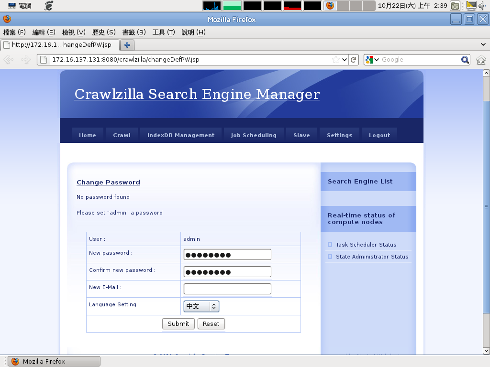
Step 4:建立自己的第1個搜尋引擎
請點選 Crawl 標籤請輸入 索引庫名稱
請輸入 網址 ( 例如 https://linux.vbird.org )
請指定 深度(可以向下到 6 層)
請點選 Submit 送出
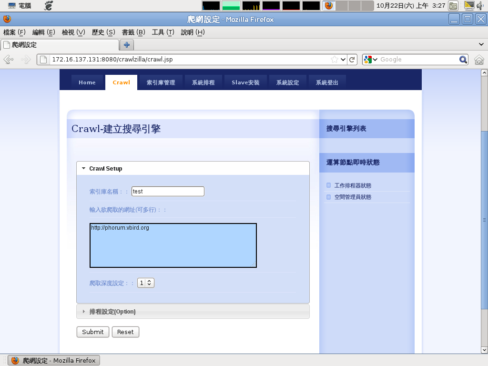
如果該網站資料常常會變動, 可以設定定時排程
請輸入 排程日期
請輸入 時間
請輸入 頻率
最後點選 Submit 送出
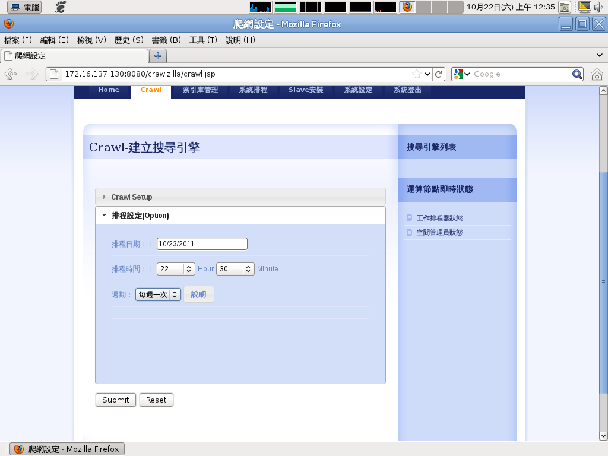
資料擷取的狀態
可以點選 "索引庫管理" 標籤
觀察爬取狀態
要知道目前的工作狀況
可以點選索引庫管理 右邊的 "工作排程器狀態"
畫面如下
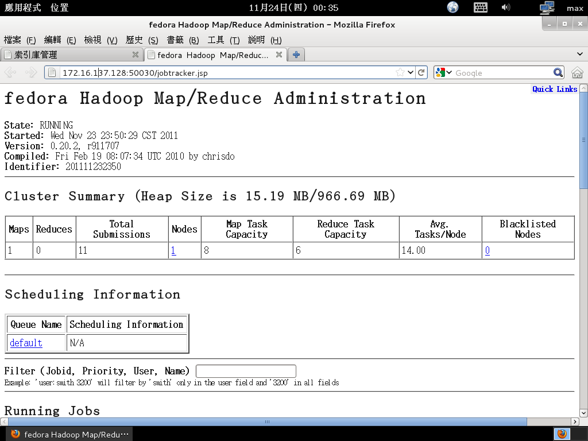
如果要知道目前的檔案及空間狀況
可以點選索引庫管理 右邊的 "空間管理員狀態"
畫面如下
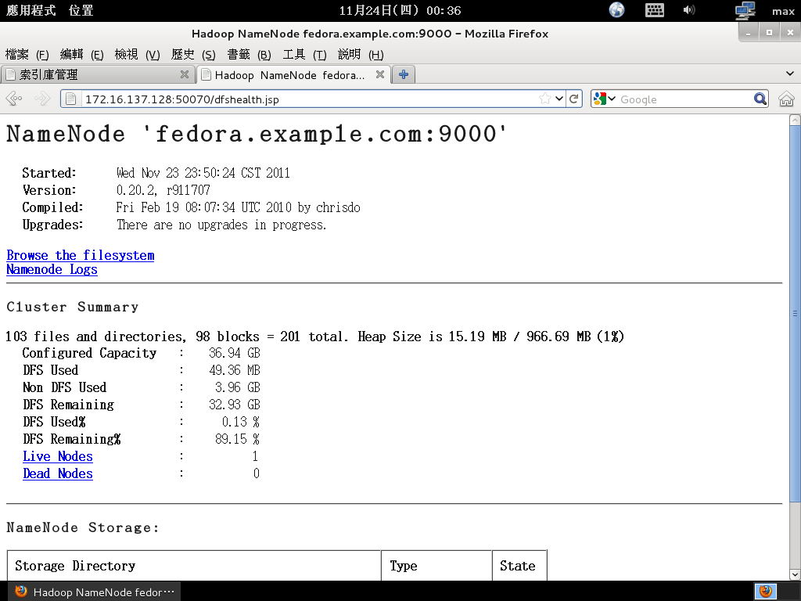
如果要觀察是否有系統排程 或是新增排程
可以點選 "系統排程" 標籤
如果日後要建立叢集系統
可以點選 "Slave 安裝" 標籤
上面有相關安裝程式
資料爬取完畢之後
可以在索引庫管理內找到資料
上面會顯示爬取的時間以及深度
可以點選索引庫名稱來研究相關資料
例如 相關連結的位置以及深度
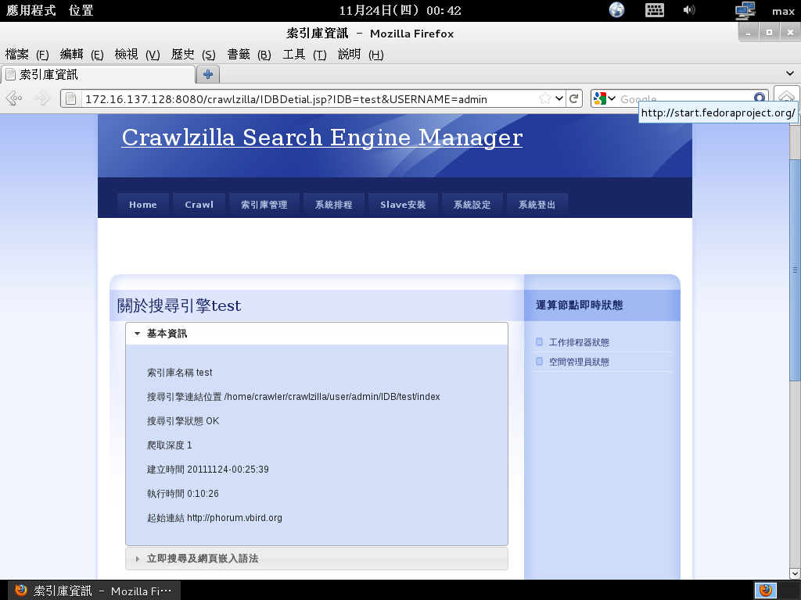
也可以將自訂的搜尋引擎嵌入網頁頁面
或是立即搜尋
針對被索引的資料庫
Crawlzilla 會整理文件的檔案數量
有提到的網址(這個也可以視為網站與其他資源的關係)
會整理文件的型態 ( 純文字/PDF/HTML …)
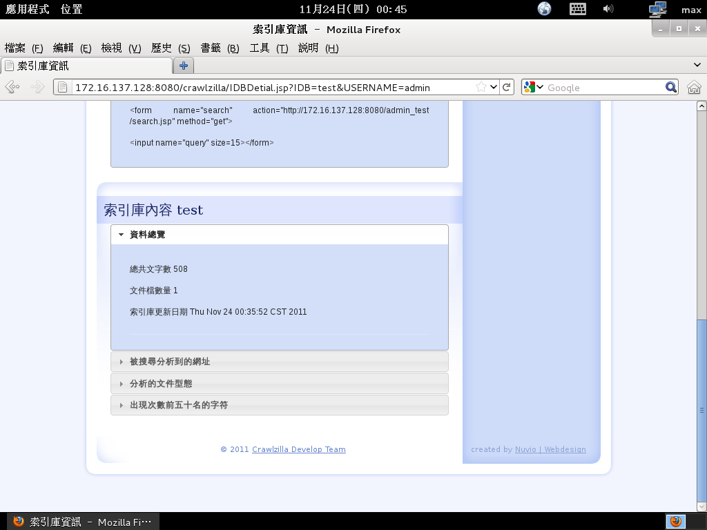
點選 右邊的索引庫名稱可以進入搜尋引擎
輸入關鍵字即可搜尋
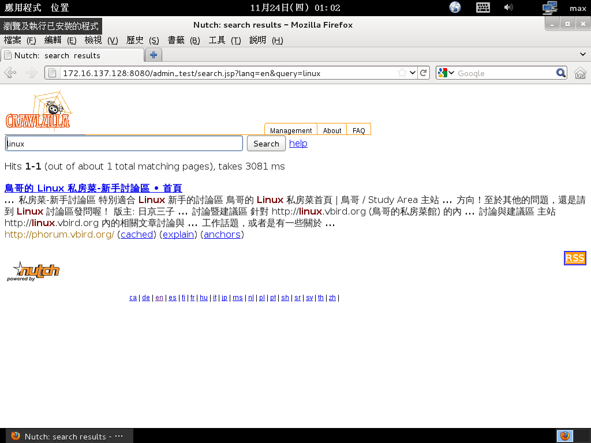
Reviews (0)
Be the first to review this listing!
自由軟體鑄造場 製作 最佳瀏覽狀態：IE7或Firefox2.0以上 (建議使用Firefox) ‧ 解析度1024*768
E-Mail：contact@openfoundry.org Address：台北市南港區研究院路2段128號 中央研究院資訊科學研究所 . 隱私權條款. 使用條款
E-Mail：contact@openfoundry.org Address：台北市南港區研究院路2段128號 中央研究院資訊科學研究所 . 隱私權條款. 使用條款